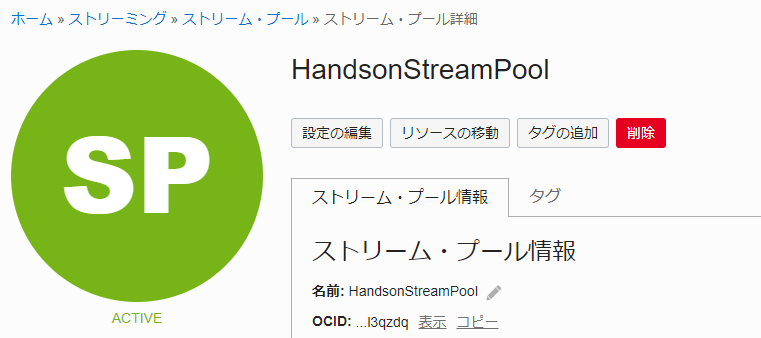
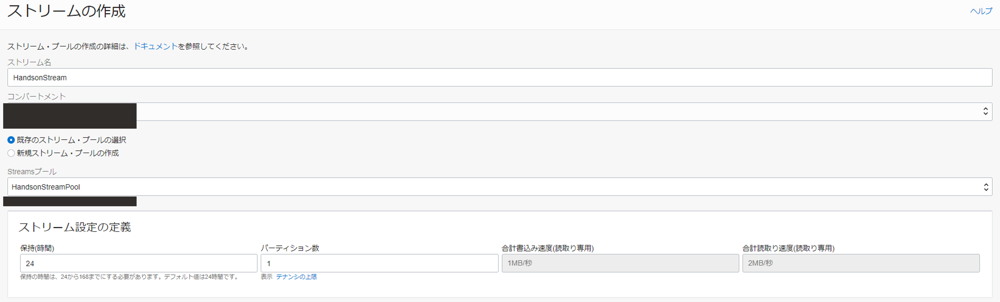
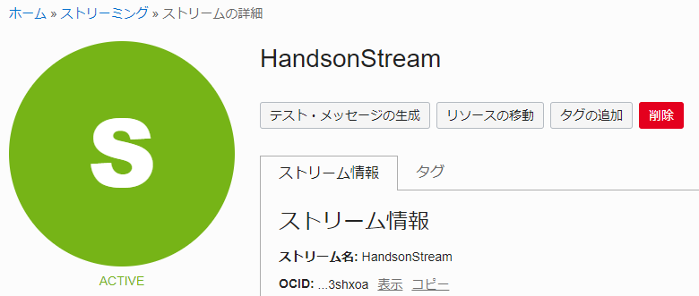
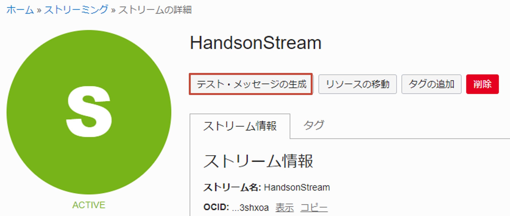
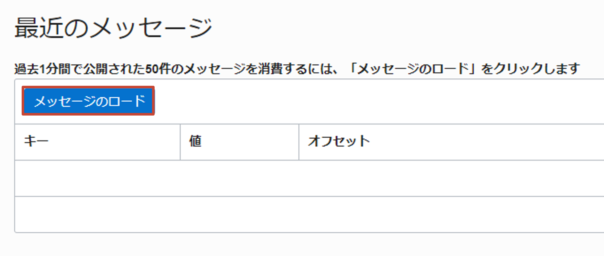
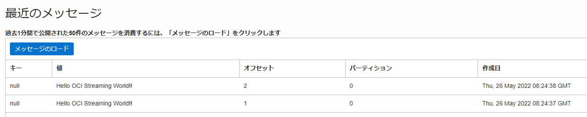

このハンズオンでは、OCI Streaming を使う上での事前準備やいくつかのクライアントツールを用いて、実際に OCI Streaming に対して Pub/Sub を行うことで基本的な操作や特徴を学ぶことができます。
前提条件
- クラウド環境
- Oracle Cloud のアカウント（Free Trial）を取得済みであること
- 最新版の OCI CLI がセットアップされていること
- Cloud Shell の使用を推奨します
手順
ポリシーの作成
OCI Streaming を使用するためのポリシーを作成します。OCI コンソール左上のハンバーガーメニューから、アイデンティティとセキュリティ > ポリシーと選択します。

ポリシーの作成を押します。

以下のように入力し、ポリシーを生成します。(<your-group>, <your-compartment>は、ご自身の環境に合わせて変更してください)
Allow group <your-group> to manage stream-family in compartment <your-compartment>
ストリーム・プールの作成
ストリームの管理に使用する論理グループであるストリーム・プールを作成します。OCI コンソール左上のハンバーガーメニューからアナリティクスと AI > ストリーミングを選択します。

ストリーム・プールを選択します。

ストリーム・プールの作成を押します。

以下のように入力して、ストリーム・プールを作成します。
- ストリーム・プール名: HandsonStreamPool
- リソース・コンパートメント: ご自身のコンパートメント
- ストリーム・プールの構成
- エンドポイント・タイプの選択: パブリック・エンドポイント
- 暗号化設定の構成: Oracle 管理キーを使用した暗号化

作成したストリーム・プールのステータスが ACTIVE となったら、次はストリームを作成します。

ストリームの作成
作成したストリーム・プール（HandsonStreamPool）の詳細画面でストリームの作成を押します。

以下のように入力し、ストリームを作成します。
- ストリーム名: HandsonStream
- コンパートメント: ご自身のコンパートメント
- 既存のストリーム・プールの選択
- Streams プール: HandsonStreamPool
- ストリーム設定の定義
- 保持(時間): 24
- パーティション数: 1

作成したストリームのステータスが ACTIVE となったことを確認します。

OCI Console を用いたテスト・メッセージの Pub/Sub
作成したストリームの詳細画面でテスト・メッセージの生成を押します。

データに、任意の文字列を入力し、生成を押します。(OCI Streaming へメッセージを Publish することに相当します)

次に、ストリームの詳細画面でメッセージのロードを押します。（OCI Streaming からメッセージを Subscribe することに相当します）

以下のように、入力した文字列が値に含まれていれば成功です。

OCI CLI を用いたメッセージの Pub/Sub
ここでは、OCI CLI を用いて、OCI Streaming と Pub/Sub してみます。まずは、接続のために必要な情報を取得します。作成済みのストリーム・プール（HandsonStreamPool）の詳細画面から、FQDN を参照しテキストエディタ等に控えておきます。

以下のようなコマンドを実行し、メッセージの Publish を行います。(<your-stream-id>は、ご自身の作成した Stream の OCID を入力してください) メッセージ内の key, value は Base64 エンコードする必要があるため、変更したい場合は、任意のエンコーダーをご使用ください。また、以降の処理は Cloud Shell を用いて実行することを推奨します。
oci streaming stream message put \
--stream-id <your-stream-id> \
--messages '[{"key": "a2V5MQ==", "value": "dmFsdWUx"}]' \
--endpoint https://cell-1.streaming.ap-tokyo-1.oci.oraclecloud.com
以下のような結果が返却されます。
{
"data": {
"entries": [
{
"error": null,
"error-message": null,
"offset": 5,
"partition": "0",
"timestamp": "2022-05-26T08:39:22.231000+00:00"
}
],
"failures": 0
}
}
メッセージを Subscribe するために、必要なカーソル（ストリーム内のロケーションを示すポインタ）を作成します。以下のコマンドを実行します。
oci streaming stream cursor create-cursor \
--stream-id <your-stream-id> \
--partition 0 \
--type TRIM_HORIZON \
--endpoint https://cell-1.streaming.ap-tokyo-1.oci.oraclecloud.com
以下のような結果が返却されます。
{
"data": {
"value": "eyJjdXJzb3JUeXBlIjoicGFydGl0aW9uIiwidHlwZSI6IlRyaW1Ib3Jpem9uIiwib2Zmc2V0IjpudWxsLCJ0aW1lIjpudWxsLCJwYXJ0aXRpb24iOiIwIiwic3RyZWFtSWQiOiJvY2lkMS5zdHJlYW0ub2MxLmFwLXRva3lvLTEuYW1hYWFhYWFzc2w2NWlxYWViaHl1YjJkeW5jemJtNnB4dHN3eG5peWdneWxsY2Q1bTNwbGNuaWw3MjJxIiwiZXhwaXJhdGlvbiI6MTY1MzU1NzY2Nzg4NywiY3Vyc29yVHlwZSI6InBhcnRpdGlvbiJ9"
}
}
作成したカーソルを用いて、OCI Streaming からメッセージを Subscribe します。(<cursor-value>は、カーソルを作成した結果に含まれる .data.value の値をご使用ください)
oci streaming stream message get \
--cursor <cursor-value> \
--stream-id <your-stream-id> \
--endpoint https://cell-1.streaming.ap-tokyo-1.oci.oraclecloud.com
以下のような結果が返却されます。
{
"data": [
{
"key": null,
"offset": 0,
"partition": "0",
"stream": "HandsonStream",
"timestamp": "2022-05-26T08:18:17.461000+00:00",
"value": "SGVsbG8gT0NJIFN0cmVhbWluZyBXb3JsZCEh"
},
{
"key": null,
"offset": 1,
"partition": "0",
"stream": "HandsonStream",
"timestamp": "2022-05-26T08:24:37.337000+00:00",
"value": "SGVsbG8gT0NJIFN0cmVhbWluZyBXb3JsZCEh"
},
{
"key": null,
"offset": 2,
"partition": "0",
"stream": "HandsonStream",
"timestamp": "2022-05-26T08:24:38.507000+00:00",
"value": "SGVsbG8gT0NJIFN0cmVhbWluZyBXb3JsZCEh"
},
{
"key": "a2V5MQ==",
"offset": 3,
"partition": "0",
"stream": "HandsonStream",
"timestamp": "2022-05-26T08:38:41.232000+00:00",
"value": "dmFsdWUx"
},
{
"key": "key1",
"offset": 4,
"partition": "0",
"stream": "HandsonStream",
"timestamp": "2022-05-26T08:39:10.341000+00:00",
"value": "valuew=="
},
{
"key": "a2V5MQ==",
"offset": 5,
"partition": "0",
"stream": "HandsonStream",
"timestamp": "2022-05-26T08:39:22.231000+00:00",
"value": "dmFsdWUx"
}
],
"opc-next-cursor": "eyJjdXJzb3JUeXBlIjoicGFydGl0aW9uIiwidHlwZSI6IkFmdGVyT2Zmc2V0Iiwib2Zmc2V0Ijo1LCJ0aW1lIjpudWxsLCJwYXJ0aXRpb24iOiIwIiwic3RyZWFtSWQiOiJvY2lkMS5zdHJlYW0ub2MxLmFwLXRva3lvLTEuYW1hYWFhYWFzc2w2NWlxYWViaHl1YjJkeW5jemJtNnB4dHN3eG5peWdneWxsY2Q1bTNwbGNuaWw3MjJxIiwiZXhwaXJhdGlvbiI6MTY1MzU1Nzc5MjA5NiwiY3Vyc29yVHlwZSI6InBhcnRpdGlvbiJ9"
}
オプション: Kafka Console Client を用いたメッセージの Pub/Sub
OCI Streaming は、Apache Kafka の API に一部互換性を持っています。詳細は、Kafka API のサポート をご参照ください。このセクションでは、Kafka をインストールした際に付属してくるクライアントツールを用いて、OCI Streaming と Pub/Sub してみます。
まずは、Kafka Client から接続するために必要な情報を取得します。作成済みのストリーム・プール（HandsonStreamPool）の詳細画面から、Kafka 接続設定を押します。

Kafka 接続設定ですべてコピーを押し、コピーした内容をテキストエディタなどに控えておきます。

SASL 接続文字列中に含まれる AUTH_TOKEN は、ユーザーの認証トークンをご使用ください。（作成済みの認証トークンを有していない場合は、こちらを参照ください）
以降の処理は、Cloud Shell を用いて実施することを推奨します。
まずは、Apache Kafka をホームディレクトリ（$HOME）にダウンロードします。
wget https://dlcdn.apache.org/kafka/3.1.0/kafka_2.13-3.1.0.tgz
展開します。
tar -xzvf kafka_2.13-3.1.0.tgz
展開先を $KAFKA_HOME に指定します。
export KAFKA_HOME=$HOME/kafka_2.13-3.1.0
先ほど取得した OCI Streaming の接続情報を元に、Kafka の接続情報ファイルを作成し、$KAFKA_HOME/config に配置します。
$KAFKA_HOME/config/producer-streaming.properties
# list of brokers used for bootstrapping knowledge about the rest of the cluster
bootstrap.servers=<Kafka 接続設定に含まれるブートストラップ・サーバー>
# specify the compression codec for all data generated: none, gzip, snappy, lz4, zstd
compression.type=none
security.protocol=SASL_SSL
sasl.mechanism=PLAIN
sasl.jaas.config=<Kafka 接続設定に含まれる SASL 接続文字列>
$KAFKA_HOME/config/consumer-streaming.properties
# list of brokers used for bootstrapping knowledge about the rest of the cluster
bootstrap.servers=<Kafka 接続設定に含まれるブートストラップ・サーバー>
# consumer group id
group.id=handson-consumer-group
# session timeout
session.timeout.ms=30000
security.protocol=SASL_SSL
sasl.mechanism=PLAIN
sasl.jaas.config=<Kafka 接続設定に含まれる SASL 接続文字列>
まずは、OCI Streaming にメッセージを Publish します。
$KAFKA_HOME/bin/kafka-console-producer.sh \
--bootstrap-server cell-1.streaming.ap-tokyo-1.oci.oraclecloud.com:9092 \
--topic HandsonStream \
--producer.config $KAFKA_HOME/config/producer-streaming.properties
Client から適当な文字列を Publish します。
>Hello OCI Streaming World from Kafka Client
>...
ctrl + c でクライアントから抜けた後に、Subscribe します。
$KAFKA_HOME/bin/kafka-console-consumer.sh \
--bootstrap-server cell-1.streaming.ap-tokyo-1.oci.oraclecloud.com:9092 \
--topic HandsonStream \
--consumer.config $KAFKA_HOME/config/consumer-streaming.properties
先ほど、Publish した文字列が確かに Subscribe できていることが確認できます。
Hello OCI Streaming World from Kafka Client
...